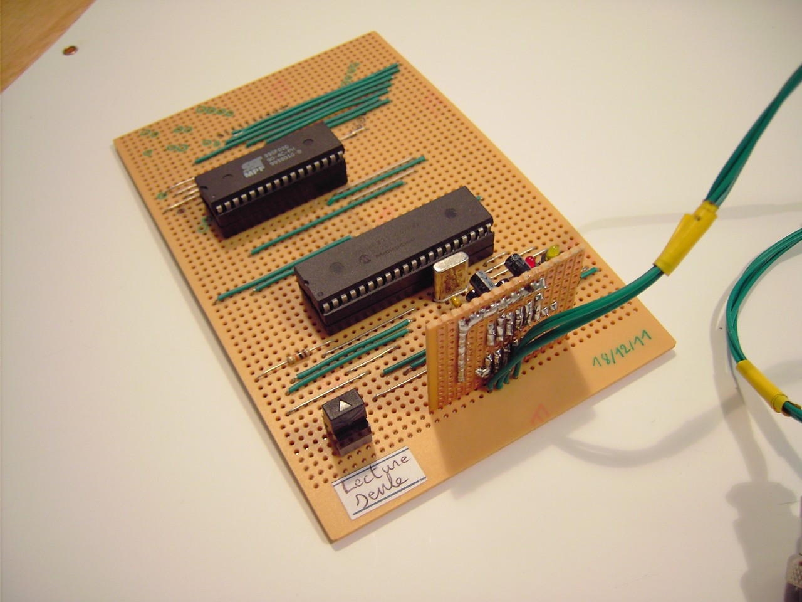

Périphérique de stockage de masse pour le A6
La capacité de stockage du A6 était limitée à 256 octets (mémoire EEPROM interne), ce qui n'était pas suffisant pour stocker des fichiers contenant les programmes exécutables par le A6.
En désossant une vieille carte mère de PC, je suis tombé sur une puce mémoire qui servait de BIOS. Il s'agit d'une mémoire Flash SST39SF020 de 2MBits, ce qui correspond à 256Ko, soit 1000 fois plus que mon EEPROM interne (ça fait quand même rigoler comme valeur...).
Il a donc été possible de réaliser une sorte de "clé USB" qui se connecte sur le port série du A6. 
{kind=link}
Spécifications
Comme dit précédemment, ce périphérique peut stocker jusqu'à 262 144 octets de données.
Il est possible de le brancher et de le débrancher "à chaud", c'est-à-dire sans devoir l'allumer ou l'arrêter préalablement. C'est en pensant à cela que je le comparais à une clé USB.
Le débit de transfert des données est de 25Ko/s, le maximum que peut atteindre l'UART du PIC16F877 lorsque ce dernier est cadencé à 4MHz.
Interface utilisateur
On peut voir sur la photo ci-dessous "l'interface" très basique qui permet d'indiquer l'état du périphérique :
{kind=link}
La LED jaune est allumée dès que le périphérique est branché au mini ordinateur, indiquant ainsi que le périphérique est prêt à fonctionner.
La LED rouge clignote lorsque le mini ordinateur lit ou écrit sur le périphérique. Cela évite à l'utilisateur de débrancher le périphérique de stockage alors que le A6 est en train d'y accéder.
Pour finir, un bouton permet d'empêcher l'écriture sur le périphérique. Celui-ci fonctionne alors en mode "lecture seule", protégeant ainsi les données qu'il contient.
Circuit
La fabrication du circuit posait quelques problèmes car il y a beaucoup de connexions entre la puce mémoire et le microcontrôleur qui la pilote.
De plus, le circuit ne devait pas avoir des dimensions trop importantes pour rester (plus ou moins...) portable. C'est en utilisant des bus que j'ai pu réduire la taille du circuit, au prix de quelques câbles supplémentaires.
On peut deviner sur les photos suivantes les différents bus qui servent à véhiculer les données entre les deux circuits intégrés.
{kind=link}
Voici le circuit vu de dessous :
Retour au menu des projets{kind=link}